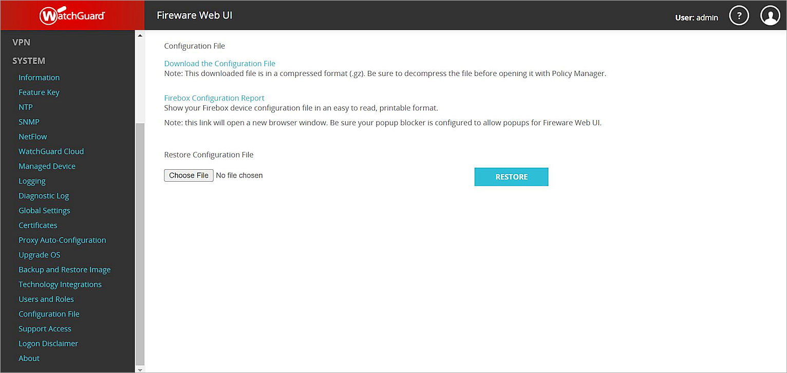
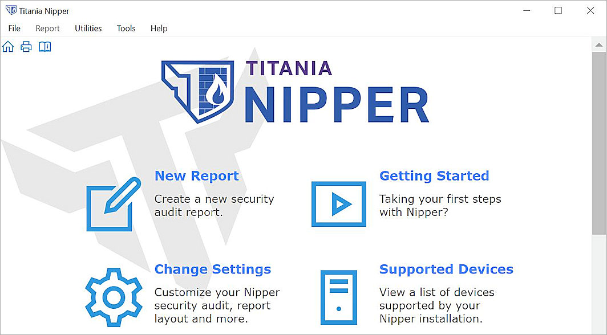

Titania Nipper is a configuration auditing tool, which helps you harden and secure vital network devices, such as firewalls, switches, and routers. This document describes the steps to import the Firebox configuration in Titania Nipper to view an audit report.
Platform and Software
The hardware and software used to complete the steps outlined in this document include:
- WatchGuard Firebox with Fireware v12.8.2
- Titania Nipper 2.13.0
Titania Web Site Information
- Homepage: https://www.titania.com/
- Support: https://www.titania.com/resources/?p=nipper&t=support-guide
Configuration
Titania Nipper should be installed and you should have access to the WatchGuard Firebox configuration file in XML format.
Retrieve the WatchGuard Firebox Configuration File
Fireware Web UI
- Log in to Fireware Web UI at https://<your firebox IP address>:8080.
- Select System > Configuration File.
- Click Download the Configuration File.
The file <firewall_name>.xml.gz downloads. - Extract the XML file with a gzip utility, such as 7-zip.

Import the XML File to Titania Nipper
To import the XML file, in Titania Nipper:
- Open Titania Nipper and select New Report.

- Click Add File.

- Select the Firebox configuration file you downloaded and click Open.

- Click Next.
A list of report sections opens.

- Select the sections you want to include in your report. Click Next.
If you select reporting types that support a comparison against a previous report, then you are prompted to select a previous Nipper report. The previous report must be a Nipper report saved in XML format.

- Click Next.
The Create Report progress bar opens. - When the report is created, click Finish.
The Audit Report opens.